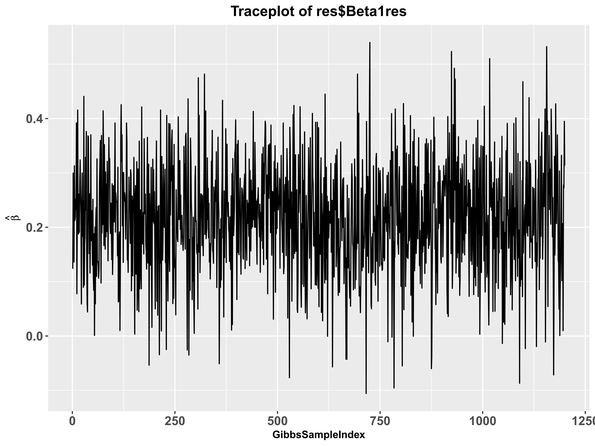
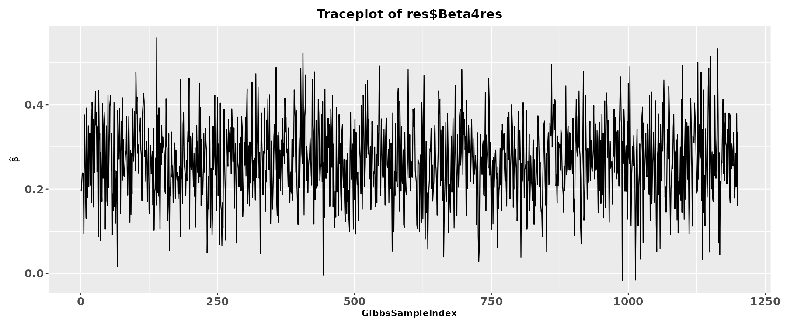

Part 5: Model Fitting and Convergence Diagnostics
Source:vignettes/MERLIN.realdata.Rmd
MERLIN.realdata.RmdLoading Preprocessed Inputs
From the preprocessing pipeline in Part 4, we have already obtained the following variables:
The selected genetic instruments and their effect sizes/standard errors for both main and interaction effects (
gammah1,gammah3,Gammah1,Gammah3,se1,se2,se3,se4).The regularized Linkage Disequilibrium (LD) correlation matrix
R.The sample overlap correlation estimates
rho1andrho2.
Fitting the MERLIN Model
MERLIN employs a Bayesian framework (Gibbs sampling) to estimate the
posterior distributions of the causal effects. The primary
MERLIN function is highly flexible, offering various model
specifications to accommodate different biological assumptions and
environmental variable types.
Choosing the Right Model Type
The model argument specifies the underlying biological
and statistical assumptions for the causal pathway. MERLIN currently
supports five distinct modes:
"standard"(Default): The comprehensive model assuming both main genetic effects and G×E interaction effects are present in both the exposure and the outcome pathways."continuous_E": A specialized version of the standard model optimized for a continuous environmental variable."discrete_E": A specialized version of the standard model for discrete binary environmental variables (e.g., sex) when the exposure and outcome samples share the same environmental distribution. This model requires the additional parameterp_common, which represents the common proportion/probability of the environmental factor taking the value 1 in both samples (i.e., P(E=1))."discrete_E_adj": An adjusted version of the discrete environmental model for situations where the proportion of the binary environmental variable differs between the exposure and outcome samples (e.g., when the sex distributions differ between the two samples). This model requiresp_expandp_out, representing P(E=1) in the exposure and outcome samples, respectively. Before model fitting, the exposure GWAS and GWIS estimates are adjusted to represent the same proportion of E=1 as in the outcome sample."MO": Designed for practical scenarios where outcome GWIS summary statistics are unavailable. This model drops the requirement forGammah3,se4, andrho_2."ME": Designed for practical scenarios where exposure GWIS summary statistics are unavailable. This model drops the requirement forgammah3,se2, andrho_2.
MCMC Control Parameters
To ensure the reliability of the Bayesian estimation, MERLIN provides full control over the Markov Chain Monte Carlo (MCMC) sampling process:
maxIter: Total number of Gibbs sampling iterations
(default: 12000).
burnin: Number of initial iterations discarded to allow
the chain to reach its stationary distribution (default:
5000).
thin: The thinning interval used to reduce
autocorrelation among posterior samples (default: 10).
seed: Random seed for fully reproducible MCMC
results.
Executing the Analysis
For our Testosterone-BD case study, the environmental factor (Sex) is
technically a binary variable. While MERLIN provides a
specialized "discrete" model, statistical evaluations have
demonstrated that when the sample size ratio between the two
environmental categories is relatively balanced (i.e., the proportion is
close to 1:1), the default "standard" model is highly
robust and yields almost identical causal estimates.
Therefore, for simplicity and to showcase the most universally
applicable workflow, we will proceed with the default
model = "standard". We also specify the MCMC parameters and
set a random seed to ensure strict reproducibility.
res <- MERLIN(gammah1 = gammah1,
gammah3 = gammah3,
Gammah1 = Gammah1,
Gammah3 = Gammah3,
se1 = se1,
se2 = se2,
se3 = se3,
se4 = se4,
R = R,
rho_1 = rho1,
rho_2 = rho2,
model = "standard",
maxIter = 12000,
burnin = 5000,
thin = 10,
seed = 2026)
str(res)The console below shows the progress and output structure of MERLIN.
Running MERLIN method (Model: standard)...
--------------------------------------------------
MERLIN Analysis Completed Successfully!
Total processing time: 92.6 seconds
--------------------------------------------------
> str(res)
List of 8
$ Beta1.hat : num 0.2202
$ Beta1.se : num 0.1011
$ Beta1.pval: num 0.0294
$ Beta1res : num [1:1200, 1] 0.305 0.164 0.221 0.194 0.102 ...
$ Beta4.hat : num 0.2671
$ Beta4.se : num 0.0934
$ Beta4.pval: num 0.0042
$ Beta4res : num [1:1200, 1] 0.194 0.213 0.238 0.233 0.237 ...Convergence Diagnostics
Because MERLIN relies on Markov Chain Monte Carlo (MCMC) methods via a Gibbs sampler, it is imperative to verify that the Markov chains have properly converged to their stationary distributions. Poor convergence indicates that the effect estimates may not be reliable.
We can visually inspect the mixing and convergence of the sampling
chains for both the main causal effect (\beta_1) and the interaction causal effect
(\beta_4) using the
traceplot function.
# Plot MCMC trace for the main causal effect
traceplot(res$Beta1.hat)
# Plot MCMC trace for the heterogeneity (interaction) causal effect
traceplot(res$Beta4.hat)
Interpretation Guidelines for Traceplots:
Good Convergence: The plot should look like a “hairy caterpillar”, with the chain rapidly mixing and oscillating around a stable mean value without any obvious long-term trends or drifting.
Poor Convergence: If the chain exhibits slow wandering, gets stuck in certain regions, or shows a distinct upward/downward trend, you may need to increase the number of MCMC iterations or check your input data for extreme outliers.
Note: When using the "MO" or
"ME" model, parameter estimation is no longer performed via
the MCMC procedure. Consequently, convergence diagnostics are not
required.
Results Extraction and Interpretation
Once convergence is confirmed, we can extract the final point estimates (posterior means), standard errors, and P-values for our causal parameters.
# Extract estimates for the main causal effect
MERLINbeta1 <- res$Beta1.hat
MERLINse1 <- res$Beta1.se
MERLINpvalue1 <- res$Beta1.pval
# Extract estimates for the GxE heterogeneity causal effect
MERLINbeta4 <- res$Beta4.hat
MERLINse4 <- res$Beta4.se
MERLINpvalue4 <- res$Beta4.pvalWe can format the output to draw our final epidemiological conclusions:
cat("========================================================\n");
cat("MERLIN Causal Inference Results: Testosterone on BD\n");
cat("========================================================\n\n");
cat(sprintf("1. Average Causal Effect (Main Effect):\n"));
cat(sprintf(" Beta: %.4f\n", MERLINbeta1));
cat(sprintf(" SE: %.4f\n", MERLINse1));
cat(sprintf(" P-val: %.2e\n\n", MERLINpvalue1));
cat(sprintf("2. Heterogeneity Causal Effect (Sex Interaction):\n"))
cat(sprintf(" Beta: %.4f\n", MERLINbeta4))
cat(sprintf(" SE: %.4f\n", MERLINse4))
cat(sprintf(" P-val: %.2e\n", MERLINpvalue4))========================================================
MERLIN Causal Inference Results: Testosterone on BD
========================================================
1. Average Causal Effect (Main Effect):
Beta: 0.2203
SE: 0.1011
P-val: 2.94e-02
2. Heterogeneity Causal Effect (Sex Interaction):
Beta: 0.2671
SE: 0.0934
P-val: 4.23e-03Conclusion
By evaluating these parameters, you can determine: Whether
Testosterone has a significant overall causal effect on Bipolar Disorder
across the entire population (based on MERLINpvalue1).
Whether the causal effect of Testosterone on Bipolar Disorder differs
significantly between males and females (based on
MERLINpvalue4). A significant \beta_4 implies a strong
environment-dependent (sex-specific) causal pathway.